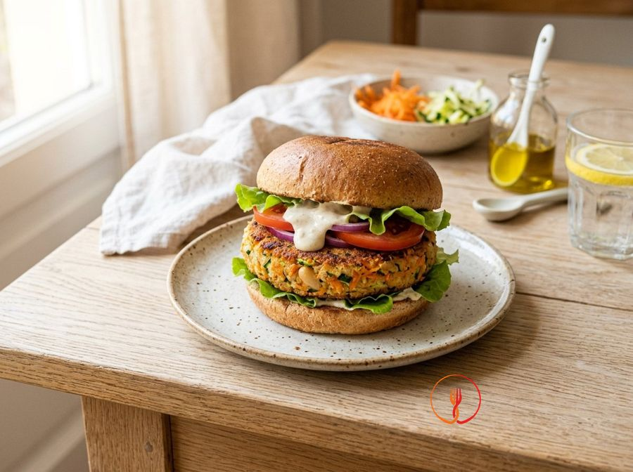

Burger di fagioli e verdure
Un'alternativa vegetale gustosa ed economica ai classici burger, ideale per integrare i legumi nella dieta familiare. La combinazione di fagioli cannellini e verdure fresche garantisce un profilo proteico e fibroso eccellente con una consistenza croccante fuori e morbida dentro.
Ingredienti
- Fagioli cannellini cotti (sgocciolati)480 g
- Carote150 g
- Zucchine150 g
- Pangrattato integrale80 g
- Uova1 pz
- Olio extravergine d'oliva30 ml
- Cipolla dorata50 g
- Prezzemolo fresco10 g
- Sale marino integrale4 g
- Pepe nero1 g
Allergeni
Glutine, Uova
Procedimento
- Scolare accuratamente i fagioli cannellini dal liquido di governo, sciacquarli sotto acqua corrente e asciugarli tamponandoli con carta assorbente per rimuovere l'umidità in eccesso.
- Lavare e spuntare le carote e le zucchine, quindi grattugiarle con una grattugia a fori larghi; strizzare con forza le verdure grattugiate tra le mani o in un canovaccio pulito per eliminare l'acqua di vegetazione.
- Tritare finemente la cipolla e farla appassire in una padella antiaderente con un cucchiaio d'olio (10 ml) per circa 5 minuti a fuoco basso, finché non diventa tenera e traslucida.
- In una ciotola capiente, schiacciare i fagioli con una forchetta fino a ottenere una purea grossolana (non usare il frullatore per evitare che l'impasto diventi troppo liquido).
- Aggiungere alla purea di fagioli le verdure grattugiate, la cipolla appassita, il prezzemolo tritato, l'uovo, il sale e il pepe, mescolando bene per amalgamare i sapori.
- Incorporare gradualmente il pangrattato integrale mescolando con le mani: il composto finale deve risultare lavorabile, non appiccicoso ma ancora leggermente umido.
- Dividere l'impasto in 4 porzioni da circa 180g l'una, formare delle palle e schiacciarle delicatamente per creare dei burger spessi circa 2 cm, compattando bene i bordi con le dita.
- Scaldare il restante olio extravergine (20 ml) in una padella ampia e cuocere i burger a fuoco medio per circa 6 minuti per lato, girandoli solo quando si sarà formata una crosticina ben dorata e solida.
Valori nutrizionali (stima)
| Per porzione (252 g) | Per 100 g | |
|---|---|---|
| Energia | 1192 kJ / 285.0 kcal | 473.0 kJ / 113.1 kcal |
| Proteine | 13.0 g | 5.2 g |
| Carboidrati | 36.0 g | 14.3 g |
| di cui zuccheri | – g | – g |
| Grassi | 11.0 g | 4.4 g |
| di cui saturi | – g | – g |
| Fibre | – g | – g |
| Sale | – g | – g |
Valori stimati con l'AI su dati medi CREA / USDA: sono indicativi e non sostituiscono il parere di un medico o di un nutrizionista.
Apri la ricetta nell'app per la lista della spesa, le schede ingredienti e i negozi vicini.